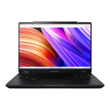
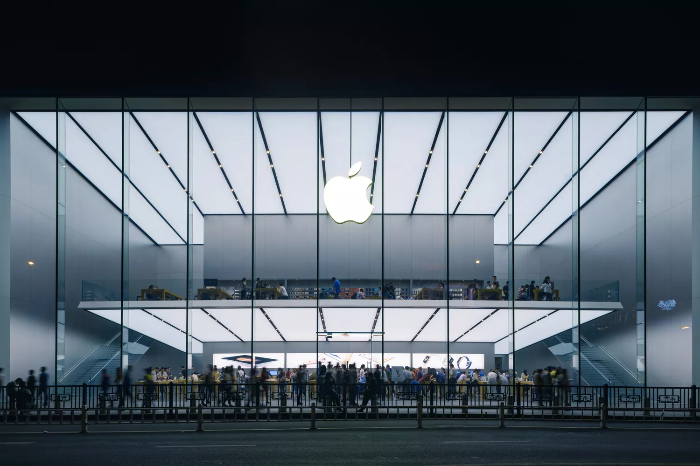

history about the brand personal computers
HpHP was founded by Bill Hewlett and Dave Packard in 1939. Their first product was an audio oscillator and one of their first customers Walt Disney. Disney used the oscillator to test audio equipment in the 12 specially equipped theaters showing Fantasia in 1940. HP entered the computer market with the HP 2116A in 1966. HP was founded by Bill Hewlett and Dave Packard in 1939.HP entered the computer market with the HP 2116A in 1966. It was designed to control HP’s large product line of test and measurement equipment. By 1969, HP was marketing a timesharing computer system and continued to issue new products, including their HP-35 hand-held calculator and several computers in the 1970s.
Razer Founded in 2005, Razer is dual headquartered in Irvine (California) and Singapore with regional headquarters in Hamburg and Shanghai. Razer has 19 offices worldwide and is recognized as the leading brand for gamers in the USA, Europe and China..
DEllDell Inc., formerly PC’s Limited (1984–88) and Dell Computer Corporation (1988–2003), global company that designs, develops, and manufactures personal computers (PCs) and a variety of computer-related products. The company is one of the world’s leading computer brands and suppliers of PCs. Dell is headquartered in Round Rock, Texas. The company, first named PC’s Limited, was founded in 1984 by American Michael Dell, who was then a student at the University of Texas in Austin. Initially running the business from a dormitory room, Dell started out providing customized upgrades for PCs.
AsusAsus was founded in Taipei in 1989 by T.H. Tung, Ted Hsu, Wayne Hsieh and M.T. Liao, all four having previously worked at Acer as hardware engineers. At this time, Taiwan had yet to establish a leading position in the computer-hardware business.
Apple originally known as Apple Computers — began in 1976. Founders Steve Jobs and Steve Wozniak worked out of Jobs' garage at his home in Los Altos, California. On April 1, 1976, they debuted the Apple 1, a desktop computer that came as a single motherboard, pre-assembled, unlike other personal computers of that era. The Apple II was introduced about a year later. The upgraded machine included an integrated keyboard and case, along with expansion slots for attaching floppy disk drives and other components. The Apple III was released in 1980, one year before IBM released the IBM Personal Computer. Technical failures and other problems with the machine resulted in recalls and damage to Apple's reputation. The first home computer with a GUI, or graphical user interface an interface that allows users to interact with visual icons — was the Apple Lisa. The very first graphical interface was developed by the Xerox Corporation at its Palo Alto Research Center (PARC) in the 1970s. Steve Jobs visited PARC in 1979 (after buying Xerox stock) and was impressed and highly influenced by the Xerox Alto, the first computer to feature a GUI.
MSIHistory. MSI's five founders Joseph Hsu, Jeans Huang, Frank Lin, Kenny Yu and Henry Lu all worked for Sony before establishing MSI. Sony's corporate downsizing in 1985 brought them together. With the engineering background working for Sony, they established Micro Star International together in August 1989
AcerAcer was founded in 1976 by Stan Shih (Chinese: 施振榮), his wife Carolyn Yeh, and five others as Multitech in Hsinchu City, Taiwan. The company began with eleven employees and US$25,000 in capital. Initially, it was primarily a distributor of electronic parts and a consultant in the use of microprocessor technologies